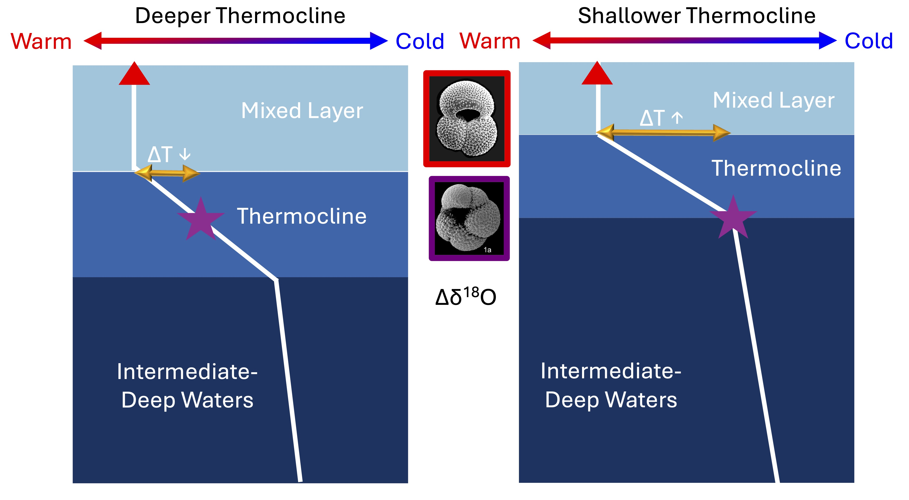
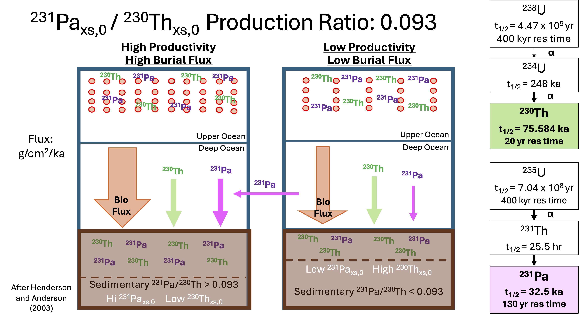

The equatorial Pacific is a dynamic region, characterized by zonal and meridional asymmetries in both the ocean and the atmosphere. The asymmetries in the eastern equatorial Pacific (EEP) reach a maximum in northern hemisphere fall, when southern hemisphere trade winds cross the equator and drive the upwelling of cold, carbon and nutrient-rich waters along a shallow thermocline, fueling marine primary production. Interannual perturbations in ocean heat content also result in El Niño or La Niña events, which diminish or amplify these asymmetries. In my dissertation research, I used multi-proxy paleo-records derived from marine sediment cores to reconstruct fundamental aspects of the coupled ocean-atmosphere system in the EEP in the late Pleistocene (160-0 ka). I evaluated the hypothesis that changes in the seasonal distribution of equatorial insolation, which were primarily controlled by Earth’s precession, influenced the mean state and variability of the EEP in the late Pleistocene. The topics of the three chapters of my dissertation are summarized below.
(1) We found that EEP thermocline depth, reconstructed from the oxygen isotope composition of multiple species of planktic foraminifera that lived at different depths in the water column, oscillated between a La Niña-like and an El Niño-like state on precession timescales in the late Pleistocene, in close phase with equatorial insolation during northern hemisphere late summer/early fall. This manuscript, co-authored with Chandler Morris, Karine Holmes, and Jerry McManus, is currently in review at Nature Communications.

(2) EEP export production, reflected in sedimentary 231Pa/230Th, was influenced by changes in high latitude nutrient leakage and upwelling and, at times, varied on precession timescales during the late Pleistocene. Glacial increases in EEP deep ocean carbon storage, reconstructed from sedimentary authigenic 238U, also occurred independently of changes in local export production. We concluded that EEP export production was not a key influence on ocean-atmosphere carbon cycling in the late Pleistocene. This manuscript, co-authored with Jerry McManus and Allison Jacobel, is currently in review at Earth and Planetary Science Letters.

(3) Individual oxygen isotope analyses of the surface-dwelling foraminifera Globigerinoides ruber were used to reconstruct EEP sea-surface variability during the last interglacial and penultimate glacial period. While sea-surface variance was not significantly different from that of the late Holocene, the paleo-record suggests that the strength and frequency of ENSO events varied with changes in equatorial insolation during northern hemisphere late summer/early fall and with EEP thermocline depth. This manuscript, co-authored with Jerry McManus, is currently in preparation for submission.